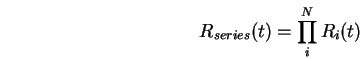

Next:
ความน่าเชื่อถือของ ระบบขนาน
Up:
สรุปสูตรการคำนวณความน่าเชื่อถือของระบบ โดยวิธีการแจกแจง
Previous:
สรุปสูตรการคำนวณความน่าเชื่อถือของระบบ โดยวิธีการแจกแจง
Contents
Index
ความน่าเชื่อถือของ ระบบอนุกรม

(11.1)
Vara Varavithya 2002-03-09